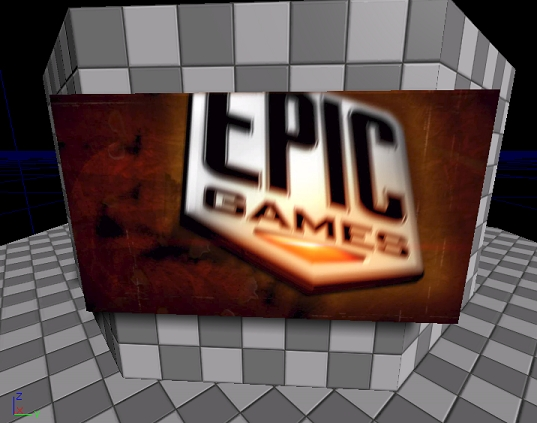

UDN
Search public documentation:
MovieTextureJP
English Translation
中国翻译
한국어
Interested in the Unreal Engine?
Visit the Unreal Technology site.
Looking for jobs and company info?
Check out the Epic games site.
Questions about support via UDN?
Contact the UDN Staff
中国翻译
한국어
Interested in the Unreal Engine?
Visit the Unreal Technology site.
Looking for jobs and company info?
Check out the Epic games site.
Questions about support via UDN?
Contact the UDN Staff
UE3 ホーム > マテリアルとテクスチャ > ムービー テクスチャ
ムービー テクスチャ
概要
新しいムービー ファイルをインポートする
 このムービー テクスチャは、マテリアルで使用する通常の 2d テクスチャ リソースと同じようにサンプリングができます。こうしてマテリアルは、レベル内でサーフェスに適用することができます。
このムービー テクスチャは、マテリアルで使用する通常の 2d テクスチャ リソースと同じようにサンプリングができます。こうしてマテリアルは、レベル内でサーフェスに適用することができます。

ムービー テクスチャのプロパティ
MovieStream_Memory - このオプションでは、プレイバックが始まる前に、ムービー ファイルのすべてのコンテンツをメモリにロードします。デコーダは、このメモリから直接ムービー ストリームをデコードします。
MovieStream_File - このオプションは、ムービー ファイルをディスクで開きますが、いずれのムービー データもプリロードしません。プレイバックが始まると、デコーダはデコーディング用のファイルから直接ムービーデータをデコードします。
これらのオプションは、リソース用の初期のムービー プレイバックをコントロールするために使用できます：
Looping （ルーピング） - これが有効の場合、ムービーが終わりに値がづくと、ループバックし、ムービーの始めからプレイバックを再スタートします。
AutoPlay （自動再生） - これが有効の場合、ムービーがインポートされるとすぐにプレイバックが始まります。無効の場合は、ムービーのシングル フレームのみがデコードされ、プレイバックは一時停止になります。
スクリプト関数
スクリプトでTextureMovie リソースを参照することにより、コントロールできるプレイバック機構がいくつかあります：Play() (再生) - デコーディングを開始し、ムービーをプレイバックします。この関数を呼び出すことで、一時停止になっていたムービーの一時停止を解除したり、停止になっていたムービーのプレイバックを再スタートします。
Pause() （一時停止） - ムービーのデコーディングとプレイバックを一時停止します。Play() を呼び出すと、プレイバックを再開します。
Stop() （停止） - Play() （一時停止）と同じですが、ムービー ストリームも始めのフレームにリセットされます。Play()（再生）をコールするとプレイバックが再開します。
ムービー ストリームからのデコーディングには CPU タイムを要しますが、デコーディングはレンダリング スレッドで行われます。